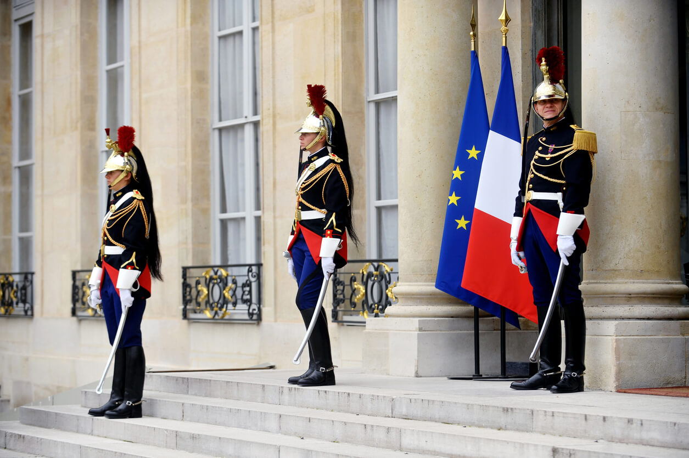

The following pictures represent protocol in various forms:

Networking protocols

Diplomatic protocols
Scientific protocols
Protocols are essentially agreed-upon guidelines or rules that help ensure smooth interactions and communication between different parties. Think of them as the social etiquette of various activities. For example, in a formal dinner setting, there are protocols for how to set the table, how to serve food, and how to behave. Similarly, in diplomacy, there are protocols for how countries interact with each other, including how to address leaders and conduct negotiations. These protocols help maintain order, prevent misunderstandings, and ensure that everyone knows what to expect in different situations. By following protocols, people can interact more effectively and harmoniously, whether in social, professional, or international contexts.
Examples include:
To me, protocols represent structure and clarity. They provide a framework for interactions and activities, guiding behavior and expectations. Without protocols, chaos can ensue, as people may not know how to act or what to expect. By following protocols, we can navigate different situations with confidence and ensure that everyone is on the same page. Protocols help create order and harmony in a world that can sometimes feel chaotic and unpredictable.
“Protocols are agreements that create smooth communication.” - Developer
“For me, protocol means process. It's a sequence of actions you follow to achieve something.” - Researcher
“It reminds me of unwritten rules we follow every day, like social norms.” - Artist
The following pictures represent protocol in various forms:
Networking protocols
Diplomatic protocols
Scientific protocols
Imagine a world where protocols don't exist:
Without protocols, the world becomes a noisy and disorderly place, where effective communication and coordination are impossible.
To establish or follow protocols.
Example: The company decided to protocolize the new procedures to ensure consistency across all departments.
Pertaining to or of the nature of a protocol.
Example: The protocollary guidelines were strictly followed during the international summit.
A person who drafts or adheres to protocols.
Example: As a protocollist, she was responsible for ensuring that all diplomatic events ran smoothly.
The act or process of establishing protocols.
Example: The protocolization of safety measures in the lab has significantly reduced accidents.
Having been established or regulated by protocols.
Example: The protocolized procedures were implemented to streamline the workflow.
Of or pertaining to protocols.
Example: The protocolary rules were outlined in the official document.
The act of creating or following protocols.
Example: Protocolling the new system took several weeks of meticulous planning.
Guided or regulated by protocols.
Example: The protocol-driven approach ensured that all procedures were followed correctly.